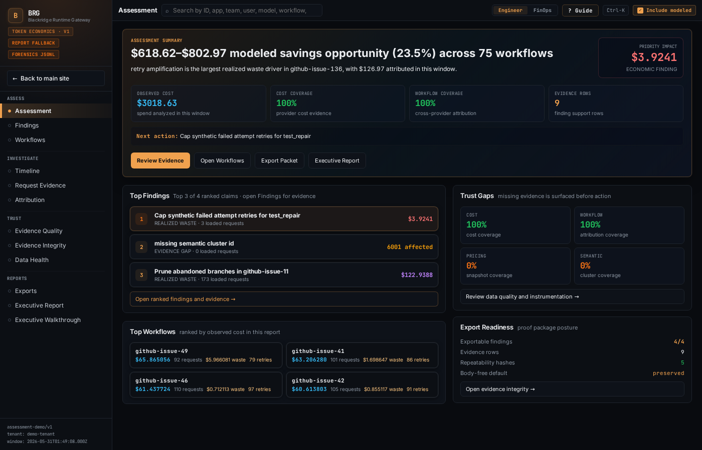

What We Found In The First Hour Of An AI Spend Assessment
A forensic assessment turns existing AI workflow events into specific findings: retrieval bloat, fallback tax, abandoned branch cost, confidence levels, and engineering fixes.
Here is what the first hour of a forensic assessment looks like. What follows is a composite drawn from our own infrastructure and early pilot work — the numbers are illustrative, the patterns are not. Within an hour, three findings change the conversation.

Three findings changed the conversation
Duplicate context documents on every invocation.
Rate limits escalated to a model costing 4x more.
Planning branches consumed spend before being abandoned.
Finding one: 23% of the workflow's inference cost came from a retrieval step that pulled the same context documents on every invocation, whether the query needed them or not.
The retrieval configuration had been set during prototyping and never tightened for production.
Estimated savings from fixing the filter: $6,200 per month.
Confidence: high. The evidence was a direct count of duplicate retrieval events matched against the prompt tokens they produced.
Finding two: the workflow used a fallback model for 31% of requests.
The primary model was hitting rate limits during peak hours, triggering automatic escalation to a model that cost 4x more per token. The rate-limit issue was solvable with request queueing.
Fallback tax: $8,400 per month that would not exist if the primary model's throughput were managed.
Finding three: a planning step explored an average of 2.7 branches per task and used 1.
The abandoned branches consumed tokens, generated model calls, and produced no output that reached the final result.
Branch exploration cost: 34% of the workflow's total spend.
Whether that cost was waste or a necessary part of the planning strategy was an engineering judgment. The point was that the team finally had the number.
What was invisible before
None of this was visible before.
The team had a cost dashboard. They could see the monthly total. They could see the trend. They had a budget alert at $40,000.
They could not see the retrieval misconfiguration. They could not see the fallback tax. They did not know abandoned branches accounted for a third of workflow cost.
The data existed in pieces. Telemetry had the events. Traces had the shape. The invoice had the bill.
The findings did not exist until the economics were reconstructed.
What forensics classifies
- Productive spend. Retry amplification. Retrieval bloat. Fallback tax. Abandoned branches. Unknown or low-confidence spend.
That is what a forensic assessment produces.
It does not grade your architecture or tell you whether your model choices are fashionable.
It reconstructs the economic behavior of your workflows and classifies what it finds
Each finding needs evidence: source events, request IDs, cost calculations, pricing basis, and a confidence level.
High-confidence findings get savings estimates. Low-confidence findings show what additional data is needed. Speculative findings stay labeled as speculative.
The output is not a report that says "your AI costs are high."
It is a set of findings ranked by impact
This behavior exists. This is what it costs. This is the evidence. This is how confident we are. This is what engineering can do about it.
The useful reaction
The reaction, every time we have looked, is the same
"We had no idea."
The teams are doing normal engineering work. The economic behavior inside AI workflows is invisible to standard tooling.
Usage dashboards show tokens. Tracing tools show spans. Neither shows the economic decisions inside the workflow: retries, fallbacks, duplicates, abandoned paths, and context expansion.
The real surprise: waste has a shape, a cause, and a fix.
If your AI spend is growing and you cannot explain why, a forensic assessment will tell you where to look first.
Request an AI spend assessment and a founder will look for likely leak classes before anyone touches production.
Request assessment